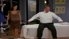

- s03e1- "The One With The Princess Leia Fantasy"
Ross's secret fantasy doesn't stay secret for long after he confides in Rachel. Chandler begins to rekindle his relationship with ex-girlfriend Janice.
- s03e2 - "The One Where No One's Ready"
Ross gets riled when his friends fail to be ready on time for a museum fundraiser where he's giving a speech.
- s03e3 - "The One With The Jam"

Monica becomes obsessed with making jam as a means of getting over Richard. Still feeling unfulfilled, she decides she wants to having a baby and visits a sperm bank.
- s03e4 - "The One With The Metaphorical Tunnel"
Ross and Rachel encourage Chandler to "go through the tunnel" and commit to Janice. Ross worries when his son plays with a girl's doll and tries frantically to substitute masculine toys.
- s03e5 - "The One With Frank Jr."
Phoebe invited her half-brother Frank Jr. to visit. Ross makes a list of famous women he'd like to date.
- s03e6 - "The One With The Flashback"
After Janice asks whether they've ever dated each other, the friends reminisce about a time three years ago and some dark secrets are revealed.
- s03e7 - "The One With The Race Car Bed"

When returning a misdelivered bed back to the store, Monica and Joey catch Janice passionately kissing her ex-husband in the back room.
- s03e8 - "The One With The Giant Poking Device"
When Phoebe believes she's killed the ugly naked guy across the street from Rachel and Monica, Joey constructs a long poking device. Chandler confronts Janice.
- s03e9 - "The One With The Football"
It's Thanksgiving and the friends start a game of football that reveals some major rivalries and prods a rematch that has serious implications for the roast turkey!
- s03e10 - "The One Where Rachel Quits"
After quitting her Central Perk gig, Rachel worries she'll be jobless long-term. Joey's job selling Christmas trees upsets Phoebe, who becomes distressed over leftover trees.
- s03e11 - "The One Where Chandler Can't Remember Which Sister"
A handsome stranger offers Rachel a fashion-buying job. Chandler forgets which of Joey's sisters he fooled around with after getting drunk at Joey's birthday.
- s03e12 - "The One With All The Jealousy"
Ross becomes obsessively jealous of Rachel's sexy new co-worker Mark and is convinced he is flirting with Rachel. Monica is smitten with a sexy busboy.
- s03e13 - "The One Where Monica & Richard Are Friends"
Monica and ex-boyfriend Richard meet by chance - and the lunch they go to leads to something more.
- s03e14 - "The One With Phoebe's Ex-Partner"
Phoebe's ex-singing partner Leslie wants to use Smelly Cat for a cat-litter ad. Chandler dates a beautiful woman with an artificial leg... and a tie to Joey.
- s03e15 - "The One Where Ross & Rachel Take A Break"
Ross and Rachel decide to go on a break. Phoebe becomes involved with a foreign diplomat.
- s03e16 - "The One With The Morning After"
Unaware of Ross's one-night stand with another woman, Rachel visits him to declare her undying love.
- s03e17 - "The One Without The Ski Trip"
Rachel asks everyone to go on a ski trip... except Ross. Chandler is particularly traumatized by the Ross/Rachel breakup, which reminds him of his parents' divorce.
- s03e18 - "The One With The Hypnosis Tape"
Chandler uses a hypnosis tape to quit smoking. Unbeknownst to him, it's aimed only at women. Phoebe freaks when her brother wants to wed a woman twice his age.
- s03e19 - "The One With The Tiny T-Shirt"
Ross is upset when Rachel returns his belongings. Monica dates a millionaire she considers funny, nice and yet not quite her dream man.
- s03e20 - The One With The Dollhouse"
Monica inherits an exquisite dollhouse from her aunt. Joey winds up in bed with his leading lady. Rachel's boss dates Chandler.
- s03e21 - "The One With A Chick And A Duck"
Monica is ecstatic when her millionaire friend Pete buys a restaurant and wants her as head chef. Joey buys Chandler a chick - a live baby chicken and later a live duck.
- s03e22 - "The One With The Screamer"
Joey's play gets terrible reviews. Ross tries to convince Rachel her date is psychotic.
- s03e23 - "The One With Ross's Thing"
Ross discovers a strange growth on his buttocks. Phoebe dates a firefighter and a teacher.
- s03e24 - "The One With The Ultimate Fighting Champion"
Monica begs Pete to stop fighting after he is beaten up. Chandler is unnerved when his boss slaps his butt. Ross starts dating a new woman.
- s03e25 - "The One At The Beach"

Phoebe invites the group to her client's beach house. Rachel tricks Ross's new girlfriend into shaving her head.